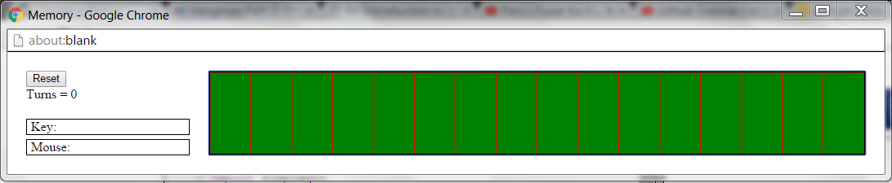

-
Memory Game :
Memory is a card game in which the player deals out a set of cards face down. In Memory, a turn (or a move) consists of the player flipping over two cards. If they match, the player leaves them face up. If they don't match, the player flips the cards back face down. The goal of Memory is to end up with all of the cards flipped face up in the minimum number of turns. For this project, we will keep our model for Memory fairly simple. A Memory deck consists of eight pairs of matching cards.
Initial Phase :

 Final Phase :
Final Phase :